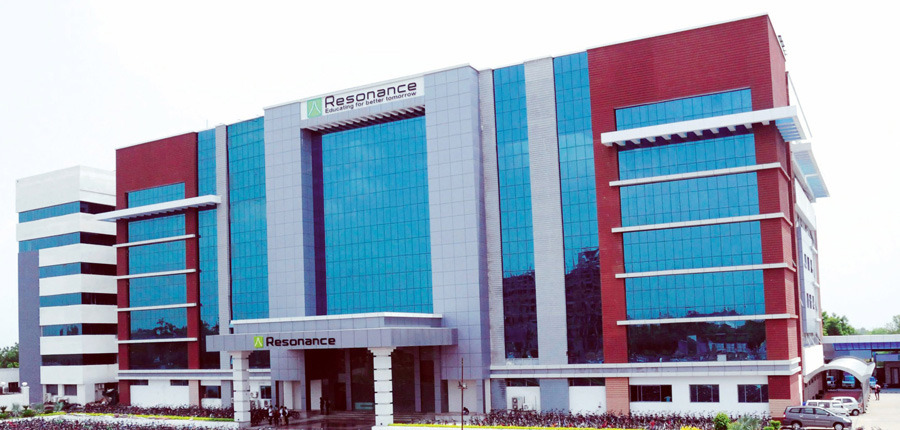

ABOUT
Kota, previously known as Kotah, is a city located in the southeast of northern Indian state of Rajasthan.It is located about 240 kilometres (149 mi) south of the state capital, Jaipur, situated on the banks of Chambal River. With a population of over 1.2 million, it is the third most populous city of Rajasthan after Jaipur and Jodhpur, 46th most populous city of India and 53rd most populous urban agglomeration of India. It serves as the administrative headquarters for Kota district and Kota division. Kota is a major coaching hub of the country for competitive examination preparations and has a number of engineering and medical coaching institutes.
The city of Kota is situated at the centre of the southeastern region of Rajasthan a region very widely known as Hadoti, the land of the Hadas. Kota lies along the banks of the Chambal river on a high sloping tableland forming a part of the Malwa Plateau. The general slope of the city is towards the north. The comparatively rocky, barren, and elevated land in the southern part of the city descends towards a plain agricultural land in the north. The Mukundara hills run from southeast to northwest axis of the town.
Kota,The Education Hub
Education in Kota aspires to excel in the overall development of the students. As per the census of 2011, Kota has an average literacy rate of 82.80% , which is much higher than the average national percentage of 64.8% . This includes the male literacy rate of 89.49% and female literacy rate of 75.33%
Kota has turned out to be a prominent hub for medical and engineering entrance examination and entices thousands of students from entire nation. Each year around 2 lakh students come to Kota aspire for lucrative options to become doctors, engineers, lawyers, chartered accountants and many more.
